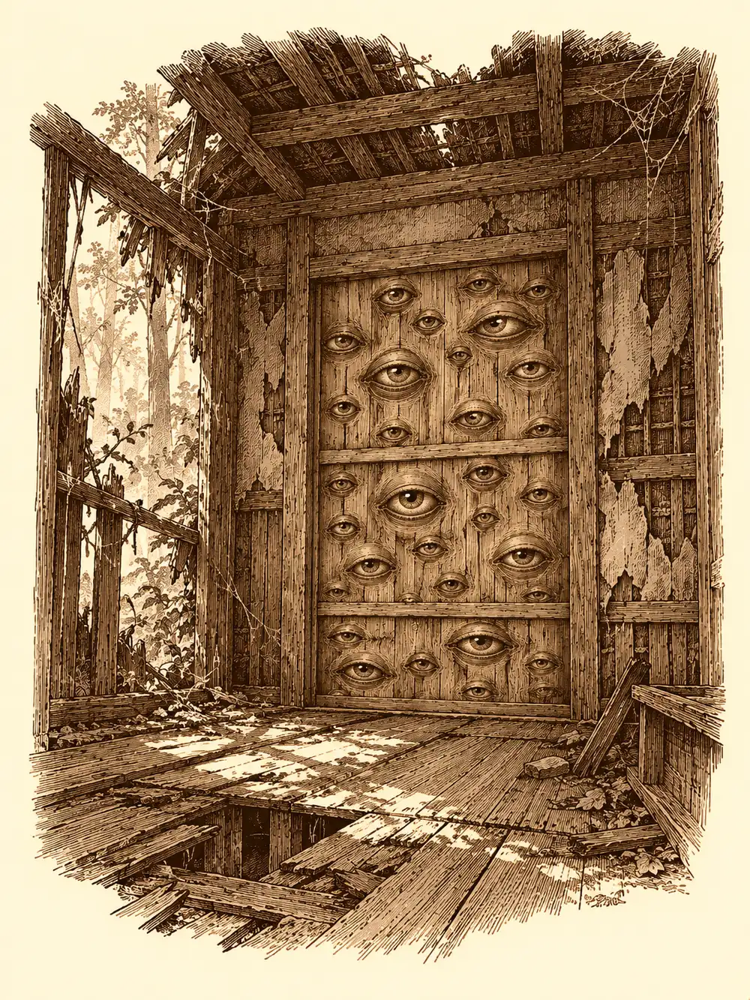

Capítulo 12
Un montón de cosas
Libro I · Los cazadores de Ukio
Peluso avanzaba por el suelo de la taberna recogiendo polvo y soltando polvo, y detrás de él, con una escoba, avanzaba Shiro recogiendo lo que Peluso soltaba. A veces la criatura se detenía, como si notara que la seguían, y el antiguo ronin se detenía también. Luego seguían los dos. Kitaro los miraba desde la barra con la paciencia de un hombre que ha aceptado su suerte.
"La base está casi terminada", anunció. "La próxima vez que vengáis la podréis ver". Se quedó mirando a Peluso. "Y quizá deberíais llevaros a este allí. Abajo habrá polvo de sobra para alimentarlo".
Eran las tres de la tarde. Acababan de comer fideos y pescado, y el nekomata, desde la chimenea, había bajado dos veces a robar un bocado sin que nadie se lo impidiera. Shiru mordisqueaba un trozo de pan de las hogazas de Yayi, que seguía bueno. Hino Yama se lamía las heridas de un encuentro reciente con unos semidioses. El enano había pasado los primeros días de la semana limpiando por dentro un caparazón enorme de kappa, que estaba convirtiendo en su casa. Hayate se había hecho un nido en un árbol de la colina.
En el pueblo había un local nuevo con un cartel enorme: La Pesca de los Cazadores. Dentro estaba el pescador del mar de Kyushu, que al ver al enano le estrechó la mano con las dos suyas.
"¡Gracias, gracias por salvarme! Mirad, he montado mi propia tienda".
Le dio a cada uno una bolsa pequeña con diez monedas de oro. Era el diez por ciento de lo que había ganado, explicó, como habían acordado. En el templo, el sacerdote del monte Sudo seguía en su sitio, más flaco que antes, porque si había poca comida él comía menos y sus fieles comían primero.
Pasaron por la herrería y por el alquimista. Las pociones costaban una fortuna. Las trampas, en cambio, habían bajado de precio, y alguno se llevó un par.
Estaban saliendo cuando una anciana se les acercó corriendo, con un ojo gris que no veía y otro que veía de sobra.
"¡Cazadores, ayudadme, por favor!".
En el río del bosque, donde las mujeres del pueblo lavaban la ropa, habían aparecido unos yokai. Tortugas asquerosas, decía, de esas que salen del agua. Mientras ellas lavaban, salían y les robaban la ropa.
"Y a cambio", dijo la anciana, "os lavaremos la ropa de por vida".
Alguien comentó que sus ropas solían volver bastante manchadas de sangre y que lavarlas era un engorro. Aceptaron.
Tardaron una hora en llegar a un sitio que estaba a unos minutos, porque la anciana caminaba muy despacio. En la orilla del río había cestos volcados, tablas de lavar, ropa abandonada en el barro. Las lavanderas se habían retirado unos pasos y cuchicheaban entre ellas. Ninguna se ponía de acuerdo sobre lo que habían visto ni sobre cuántos eran.
Prepararon un cebo. Hino Yama había traído unos trapos viejos atados a una cuerda y los echó al agua. Shiru se remangó el kimono y se metió en el río hasta las rodillas, con las manos preparadas, como los pescadores que atrapan peces a mano. Hayate subió a veinticinco pies y se quedó allí aleteando con el arco tenso. El enano se puso un vestido blanco de los que había en la orilla y empezó a bailar y a cantar como una lavandera, y las mujeres de verdad se reían tapándose la boca.
"Pues, chicas, sí que se parece un poco a una mujer".
"Un poquito regordeta".
"Si se tapara esos brazos".
Entre las piernas de Shiru pasaban carpas y peces de colores. Nada más. Luego la cuerda de Hino Yama dio un tirón tan fuerte que el mago salió volando hacia delante y cayó de bruces en el barro. Shiru agarró la cuerda, se la enrolló en la mano y tiró con todas sus fuerzas, y del agua salió despedida una trucha enorme, del tamaño de un hombre dragón, que aterrizó en la orilla dando coletazos. Hino Yama se le echó encima y la remató.
Las lavanderas se miraron.
"¿Están pescando? ¿No venían a ayudarnos?".
Entonces el agua alrededor de Shiru empezó a moverse. Olas pequeñas, luego más grandes, subiendo y bajando contra sus muslos. El cervan se dio la vuelta despacio.
Lo que salió del río fue un yokai enorme, verdoso, parecido a un pulpo, con muchos tentáculos, y cada tentáculo terminaba en una mano. Manos que agarraban, manos que robaban ropa. Por eso las mujeres habían creído ver kappa.
La pelea fue breve. Hayate le clavó los tentáculos al suelo desde el aire con el arco del gato, que volvía lentos sus movimientos. Hino Yama le quemó la piel con fuego y ácido. El enano le contó chistes subidos de tono hasta que la criatura se desplomó de la risa. Shiru le lanzó todo lo que tenía a mano: un vestido de mujer, un cazo de lavar, una piedra enorme. El pulpo quedó muerto en la orilla.
"¡Pensábamos que era un kappa!".
Las lavanderas volvieron al agua, recogieron la ropa sucia y se pusieron a lavarla otra vez. Cumplirían su parte, dijeron. Los cazadores se llevaron la trucha para la cena.
Volvían al pueblo a eso de las seis, con la luz cayendo, cuando el camino empezó a parecerles desconocido. Siguieron andando. A las once de la noche seguían en el bosque de Jigoku, dando vueltas. Hino Yama buscó algún hechizo que los estuviera engañando y solo encontró la magia de siempre, la que flota entre aquellos árboles a cualquier hora, sin nada dirigido contra ellos.
Luego vieron los árboles.
Estaban cortados. No arañados ni roídos: cortados limpiamente, de un solo tajo, algunos de un grosor que ninguno de ellos habría podido atravesar con todas sus fuerzas. Más adelante había troncos marcados con cortes largos, uno sobre otro. Y al fondo, una cabaña de madera medio en ruinas, sin cristales en las ventanas, con una pared caída y un trozo del techo abierto al cielo.
No era un sitio acogedor, pero era un techo. Shiru se puso a juntar los troncos cortados para llevárselos al pueblo. El enano entró primero.

Dentro había una lámpara colgada que parpadeaba. El enano, sin pensarlo mucho, le tiró una piedra. El farol se descolgó, flotó en el aire, abrió un ojo enorme y sacó una lengua. Hino Yama le lanzó ácido. Hayate lo derribó a flechazos.
Al caer el farol, la casa entera se despertó. Otra lámpara se encendió sola. Unas sandalias que había en un rincón empezaron a dar saltos. De otra esquina salieron volando varios paraguas con su pierna y su ojo y su lengua. Y la puerta corredera del fondo se llenó de ojos, decenas, que se abrieron todos a la vez.
Los paraguas volaron hacia Hayate, que estaba en lo alto. Uno le enroscó la lengua alrededor del cuerpo, lo subió todavía más y lo soltó desde muy arriba. El arquero cayó dando vueltas, abrió las alas a tiempo y aterrizó con el corazón en la boca. La puerta disparaba rayos por los ojos, y al enano le bastó con mirarla para sentir un miedo que le aflojó las rodillas.
Hino Yama llenó la sala de telarañas. El enano se encogió dentro de su caparazón y la red le pasó por encima. Cuando salió, había dos sandalias pegadas en la telaraña delante de él. Se puso una. Se le quedó el pie pegado a la red. Al rato consiguió ponerse la otra, y desde entonces cada paso que daba era un pisotón sobre algo que chillaba.
Shiru agarró un tronco y lo lanzó contra un paraguas, que apenas se inmutó. Probó luego con un paraguas, agarrándolo por la pierna y usándolo como garrote contra los otros, y descubrió que funcionaba mucho mejor. Por lo visto, para romper aquellas cosas lo mejor era otra de aquellas cosas.
Hino Yama soltó un estallido que sacudió la cabaña, abrió una grieta en la puerta y mandó a varios objetos contra la pared. Hayate derribó más paraguas.
Entonces, desde el bosque, llegó un gruñido.
En la cabaña todo se quedó quieto. Los paraguas que quedaban se dejaron caer al suelo y se cerraron como paraguas normales. La lámpara buscó un gancho donde colgarse. La puerta cerró todos los ojos. Los objetos tenían miedo.
Hayate se metió en la oscuridad y terminó con la lámpara que quedaba. Shiru agarró por la pierna un paraguas que intentaba escabullirse. El enano se acercó a la puerta y le habló en enano y luego en común, con la idea de llegar a un acuerdo y llevársela a casa. La puerta no contestó. No tenía boca. La entreabrió con las manos y la puerta lo miró con todos sus ojos, aterrada, intentando cerrarse otra vez.
"Yo te protejo", le dijo el enano. "Pero tú te vienes conmigo".
La arrancó del marco.
Shiru, que todavía tenía el paraguas en la mano, lo lanzó hacia el lugar de donde había venido el gruñido. Las hojas se movieron, y luego dejaron de moverse.
A su lado brilló algo. Una cuchilla. El cervan sintió un tajo en el costado antes de ver nada, y cuando giró la cabeza vio una comadreja con hojas afiladas en lugar de garras, flotando en el aire, mirándolo con los dientes al descubierto. Un kamaitachi. No era el que habían soltado del sótano de los ritualistas; aquel era otro, salvaje, rápido como un relámpago, y en un parpadeo había vuelto a meterse en la maleza.
Solo Hayate lo veía. El arquero le disparó con el yumi y el animal se volvió lento, pesado, y a sus pies brotaron unas lianas espinosas que lo dejaron atado al suelo. Hayate lo observó un momento. Los conocía. Eran agresivos, defendían su territorio, no tenían más luces que un perro listo.
El kamaitachi se soltó de las lianas, se elevó y se escondió entre los árboles, en posición de ataque. Hayate le acertó en una pata trasera, y la criatura salió chillando de la maleza, a la vista de todos. El enano le contó un chiste.
"¿Qué dice un kamaitachi cuando se corta el pelo? Que ha sido un corte relámpago".
La comadreja cayó al suelo, retorciéndose de risa.
Decidieron no matarlo. Alguien dijo que podía ser útil para cortar madera. Hayate le lanzó una red desde el aire, que se le resbaló, y luego otra, que lo atrapó. Dentro de la red, el kamaitachi habló en silvano.
"No me hacéis gracia. Largaos de mi territorio".
Sacó las cuchillas por los huecos de la red y le abrió un corte a Hayate. Shiru agarró el paraguas que se hacía el muerto y lo partió en dos delante de la cara del animal, para que viera lo que les pasaba a los brazos que no se estaban quietos. Hino Yama hizo aparecer junto a su hocico un cuenco de leche que no existía, y la comadreja lo olisqueó y bajó un poco las orejas. Hayate le echó otra red encima que le sujetó casi todo el cuerpo. Y el enano, que se había fijado en que el pelo detrás de las orejas se le erizaba como a los gatos, se agachó y empezó a rascarle justo ahí.
Poco a poco el kamaitachi dejó de gruñir. Cerró los ojos. Se quedó dormido.
Lo ataron a un tronco y pasaron la noche en la cabaña, junto al fuego, con la trucha asándose. Por la mañana, cuando Hino Yama se disponía a salir, vio algo que brillaba entre las tablas del suelo. Levantó una. Debajo había un anillo de oro con una piedra verde en el centro, y en la piedra, un símbolo que le recordó a los que había visto en el sótano de los ritualistas, en los papeles de las magas. El anillo le permitía, una vez al día, lanzar un hechizo sin que le costara nada. Se lo puso.
Emprendieron el regreso a Ukio. Shiru arrastraba los troncos cortados atados con cuerdas. Hayate tiraba del tronco donde iba sujeto el kamaitachi. El enano caminaba con dos sandalias muertas en los pies, dejando huellas de sangre a cada paso, y con la puerta de los ojos atada a la espalda como un escudo.
En una parada, alguien le acercó al kamaitachi un trozo de trucha. El animal lo miró, miró a los cazadores, y empezó a comer. Mientras comía, se dejó rascar detrás de las orejas.